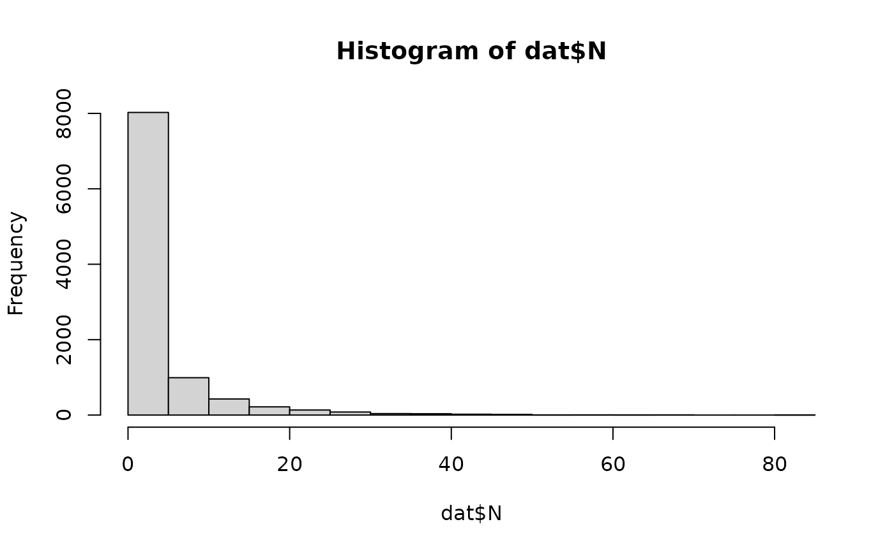

Contamination of cantaloupe rind from soil and irrigation water
Source:R/caPrimaryProduction.R
caPrimaryProduction.RdcaPrimaryProduction() is a function that assesses the contamination of cantaloupes through soil and irrigation water.
It considers soil and water contamination characteristics such as prevalence (pSoil and pIrrig)
and distributions of L. monocytogenes concentration in soil (cSoilLogMin, cSoilLogMode and cSoilLogMax
and water (cIrrigLogMin and cIrrigLogMax) as inputs.
pSoil and pIrrig have to be chosen by the user according to existing data of prevalence; whereas pSoil is conditional to several risk factors.
The identified risk factors ((WHO 2022)
) are:
irrigation in the previous days before harvesting; and
the use of organic fertilizer
which affect pSoil as associated odds-ratios (F_irrig_rain and fManure). In this context, the user has to define the proportion of fields
practicing irrigation prior to harvest or undergoing rain (p_irrig_rain), and the proportion of fields using organic amendments (pManure).
Default values for c_soil and c_irrig have been proposed based on WHO (2022)
. c_irrig is
conditional to water sources contaminated with L. monocytogenes.
Usage
caPrimaryProduction(
nLots,
sizeLot,
cantaWeight = 1000,
pSoil = 0.089,
pManure = 0.5,
fManure = 7,
cSoilLogMin = -1,
cSoilLogMode = 0.6,
cSoilLogMax = 1.48,
qSoilMin = 0.05,
qSoilMode = 0.5,
qSoilMax = 5,
pFoil = 0.5,
rFoil = 0.9,
fIrrigRaining = 25,
pIrrigRaining = 0.1,
pIrrig = 0.131,
cIrrigLogMin = -1.52,
cIrrigLogMax = 1.04,
pWaterGainMin = 0,
pWaterGainMax = 0.004
)Arguments
- nLots
Size of the Monte Carlo simulation (scalar).
- sizeLot
Number of cantaloupes per cultivation lot or field (scalar).
- cantaWeight
(
g) weight of a cantaloupe- pSoil
Prevalence of contamination of soil (provided by the user,
default=0.089according to Strawn et al. (2013) ).- pManure
Proportion of fields using organic amendments (provided by user,
default=0.5)- fManure
Odds-ratio estimate associated to use or organic amendment in soil (
default=7.0according to Strawn et al. (2013) ).- cSoilLogMin
(
log10 CFU/g) Minimum value of the triangular distribution describing variability of concentration (according to Dowe et al. (1997) :default=-1log10\ CFU/g).- cSoilLogMode
(
log10 CFU/g) Mode value of the triangular distribution describing variability of concentration (according to Dowe et al. (1997) :default=0.6log10\ CFU/g).- cSoilLogMax
(
log10 CFU/g) Maximum value of the triangular distribution describing variability of concentration (according to Dowe et al. (1997) :default=1.48log10\ CFU/g).- qSoilMin
(
g) Minimum value of the triangular distribution describing variability of quantity of soil deposited on cantaloupe (default=0.05g).- qSoilMode
(
g) Mode value of the triangular distribution describing variability of quantity of soil deposited on cantaloupe (default=0.5g).- qSoilMax
(
g) Maximum value of the triangular distribution describing variability of quantity of soil deposited on cantaloupe (default=5g).- pFoil
Proportion of fields grown in foil (e.g. plastic mulch) (
default=0.5).- rFoil
Reduction fraction of the quantity of soil transferred to rind (
default=default EKE: 0.9).- fIrrigRaining
Odds-ratio estimate associated to use of irrigation and raining events up to
2days before harvest (default=25.0according to Weller et al. (2015) ).- pIrrigRaining
Proportion of fields that undergo irrigation or raining just previous harvest (provided by user,
default=0.1).- pIrrig
prevalence of contamination in irrigation water (provided by the user,
default=0.131according to Raschle et al. (2021) )- cIrrigLogMin
(
log CFU/L) min value of the uniform distribution (provided by the user,default=-1.52according to Sharma et al. (2020) )- cIrrigLogMax
(
log CFU/L) max value of the uniform distribution (provided by the user,default=1.04according to Sharma et al. (2020) )- pWaterGainMin
minimum value of the fraction of water gain (
ml) relative to the cantaloupe weight ing(default=0.0)- pWaterGainMax
maximum value of the fraction of water gain (
ml) relative to the cantaloupe weight ing(default=0.004according to Richards and Beuchat (2004) )
Value
A list of two elements:
N(
CFU) A matrix of sizenLotsbysizeLotcontaining the numbers of L. monocytogenes cells on cantaloupe at harvest;PPrevalence of field lots of cantaloupes contaminated with L. monocytogenes cells at harvest (scalar).
Note
The prevalence in soil, pSoil, must be provided by the user according to existing data. WHO (2022)
lists various prevalence
estimates in different regions of the world. A default value of 0.089 (Strawn et al. 2013)
is taken.
pSoil is conditional to several risk factors; yet this functions is based upon two risk factors:
irrigation or rain occurring prior to harvesting, whose odds-ratio has been estimated at
25.0when taking place24hours before harvesting (Weller et al. 2015) ; andapplication of organic fertilizer, whose odds-ratio has been estimated at
7.0when manure is applied within1year (Strawn et al. 2013) .
The distribution about the concentration of L. monocytogenes in soil is represented as a triangular distribution, using data from
Dowe et al. (1997)
, who reported a mean of 4.0 MPN L. monocytogenes \ g soil, with a 95% confidence interval of <1.0-28 MPN/g.
WHO (2022)
lists many estimates of L. monocytogenes in water environments.
The estimate of 0.131 provided by Raschle et al. (2021)
has been chosen as default.
The distribution about the concentration of L. monocytogenes in irrigation water is represented as a uniform distribution,
using the minimum and maximum values from Sharma et al. (2020)
, who reported <0.03 to 11 MPN L. monocytogenes / L water.
The algorithm assumes that the amount of water deposited on the cantaloupe rind after the last irrigation is as a percentage of the cantaloupe weight,
and is sampled from a uniform distribution of parameters between a minimum value of zero and a maximum value of 0.004, taken from Richards and Beuchat (2004)
.
References
Team RC (2022). R: A Language and Environment for Statistical Computing. R Foundation for Statistical Computing, Vienna, Austria. https://www.R-project.org/. Pouillot R, Delignette-Muller M (2010). “Evaluating variability and uncertainty in microbial quantitative risk assessment using two R packages.” International Journal of Food Microbiology, 142(3), 330-40. WHO (2022). “A Roadmap for the Development of Risk Assessment Models of Listeria monocytogenes in Selected Produce and Seafood Products.” World Health Organization. Dowe MJ, Jackson ED, Mori JG, Bell CR (1997). “Listeria monocytogenes survival in soil and incidence in agricultural soils.” Journal of Food Protection, 60, 1201--1207. Raschle S, Stephan R, Stevens M, Cernela N, Zurfluh K, Muchaamba F, Nuesch-Inderbinen M (2021). “Environmental dissemination of pathogenic Listeria monocytogenes in flowing surface waters in Switzerland.” Scientific Reports, 11(9066). Richards GM, Beuchat LR (2004). “Attachment of Salmonella Poona to Cantaloupe Rind and Stem Scar Tissues as Affected by Temperature of Fruit and Inoculum.” Journal of Food Protection, 67(7), 1359-1364. doi:10.4315/0362-028X-67.7.1359 . Sharma M, Handy ET, East CL, Kim S, Jiang C, Callahan MT, Allard SM, Micallef S, Craighead S, Anderson-Coughlin B, Gartley S, Vanore A, Kniel KE, Haymaker J, Duncan R, Foust D, White C, Taabodi M, Hashem F, Parveen S, May E, Bui A, Craddock H, Kulkarni P, Murray RT, Sapkota AR (2020). “Prevalence of Salmonella and Listeria monocytogenes in non-traditional irrigation waters in the Mid-Atlantic United States is affected by water type, season, and recovery method.” PLOS ONE, 15(3), 1-15. doi:10.1371/journal.pone.0229365 . Strawn LK, Fortes ED, Bihn EA, Nightingale KK, Gröhn YT, Worobo RW, Wiedmann M, Bergholz PW (2013). “Landscape and meteorological factors affecting prevalence of three food-borne pathogens in fruit and vegetable farms.” Applied and Environmental Microbiology, 79(2), 588-600. doi:10.1128/AEM.02491-12 . Strawn LK, Gröhn YT, Warchocki S, Worobo RW, Bihn EA, Wiedmann M (2013). “Risk factors associated with Salmonella and Listeria monocytogenes contamination of produce fields.” Applied and Environmental Microbiology, 79(24), 7618-7627. doi:10.1128/AEM.02831-13 . Weller D, Wiedmann M, Strawn LK (2015). “Spatial and temporal factors associated with an increased prevalence of Listeria monocytogenes in spinach fields in New York State.” Applied and Environmental Microbiology, 81(17), 6059-6069. doi:10.1128/AEM.01286-15 .
See also
Other data generation:
Lot2LotGen(),
LotGen()
Examples
dat <- caPrimaryProduction(
nLots = 100,
sizeLot = 100,
cantaWeight = 800,
pSoil = 0.089,
pManure = 0.1,
pIrrigRaining = 0.05,
pFoil = 0.5,
rFoil = 0.75,
pIrrig = 0.131
)
hist(dat$N)
